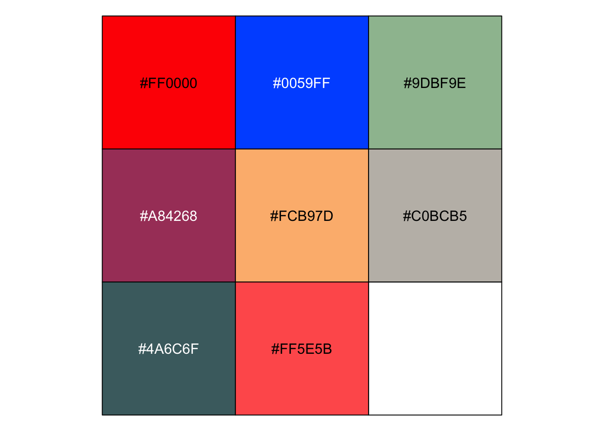
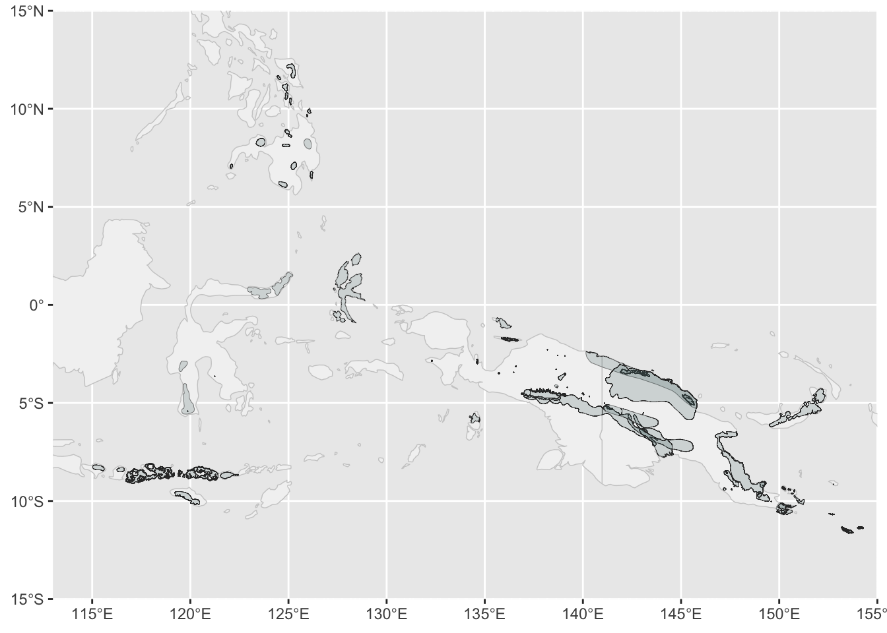
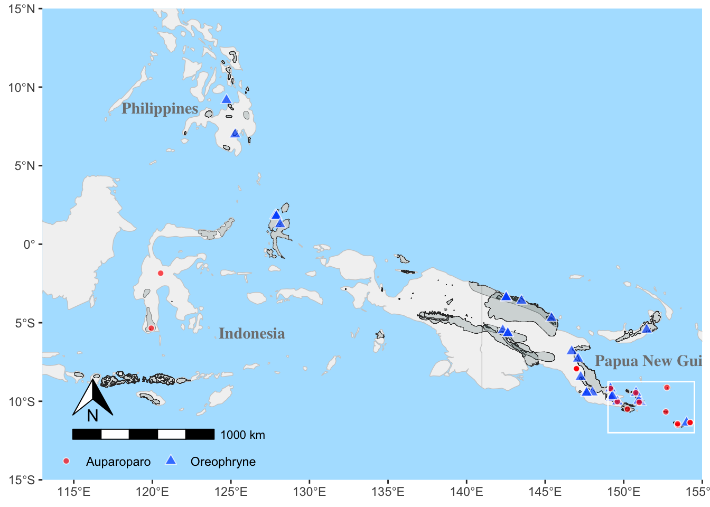
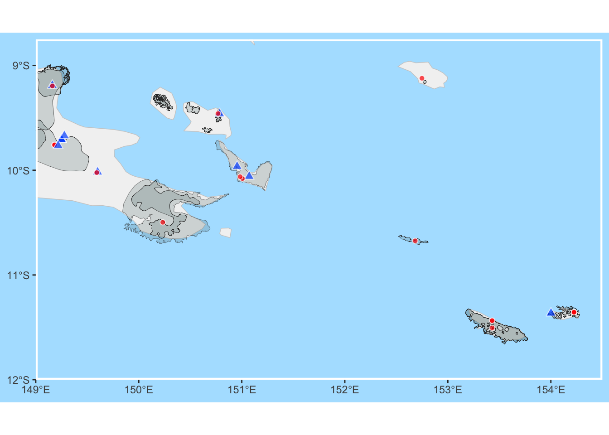

library(dplyr)
library(ggplot2)
library(sf)
library(grid)
library(rnaturalearth)
library(ggspatial)An explanation of the code used for the Auparoparo Oreophryne taxonomy manuscript
Acknowledgements
Many thanks to David Wachsmuth for his beautiful blog post that explains spatial data so well, along with how to make beautiful inset maps using sf, ggplot2, and cowplot. I ended up using gridʻs viewport, but cowplot is great too.
The code in this repository produces a map and a phylogeny
The map provides the complete range for all known Oreophryne sensu lato species, covering Papua New Guinea, Indonesia, and the Philippines.
The phylogeny shows where the clades Auparoparo and Oreophryne fall within the subfamily Asterophryinae, along with support values at the nodes.
All scripts should be run starting from the Code directory.
MAP
Setup for the mapping
The mapping script is in maps.R. Load the needed packages. dplyr is for data manipulation, ggplot2 and grid are for plotting, and the remaining are map packages. The sf package is for mapping sf shape data, ggspatial adds annotations, and rnaturalearth provides the map data for countries.
sf data refers to “simple features” data format, which is a standard for storing spatial data (i.e., representations of maps) together with non-spatial data (metadata). Read more about that here.
Load IUCN redlist data, our metadata, save as sf
The IUCN redlist contains known ranges for species. We downloaded all Oreophryne sensu lato data as shape files. We had to download the entire subfamily (Asterophryinae), which is quite a large shapefile, covert to dataframe, filter by genus, and convert back to shapefile. The filtered dataset is what we save for this repository, saved as oreophryne_sensu_lato.rds.
# code shown but not run
# shapedat <-
# read_sf("../Data/Raw_data/redlist_species_data/data_0.shp") #file >100MB
# sd <- shapedat %>% as_tibble %>% as.data.frame
# write.csv(sd[1:8], "IUCNdat.csv")
# ii <- grep("Oreophryne", sd$SCI_NAME)
# oreo_sf <- shapedat[ii,] # all Oreophryne sensu lato shape data
# write_rds(oreo_sf, "../Data/Processed_data/oreophryne_sensu_lato.rds")
oreo_sf <- readRDS("../Data/Processed_data/oreophryne_sensu_lato.rds") # contains sf_oreoRead in the metadata (a spreadsheet), some light filtering, and save as an _sf dataset.
d <- read.csv("../Data/Raw_data/metadata.csv") # tree metadata spreadsheet
metadata <- d %>% mutate(genus = replace(genus,
genus=="Aphantophryne", "Auparoparo")) %>%
filter (genus=="Oreophryne"|
genus=="Auparoparo")
metadata_sf <- st_as_sf(metadata, coords=c("longitude", "latitude"))Point aesthetics
Choosing the colors and shapes for the points. (I left in a color palette that I found from a wonderful blog post because itʻs pretty.)
# specifications for point plots used later
gc <- read.csv("../Data/gencolorABC.csv") # color codes by genus
gfill <- gc$col
names(gfill) <- gc$gen # point-fill colors by genus (value, key)
gfill <- gfill[c("Auparoparo", "Oreophryne")] # keep only these two
gfill["Auparoparo"] = "#FF0000" # change value to red
scales::show_col(c( "#FF0000", # Auparoparo
"#0059FF", # Oreophryne
"#9DBF9E",
"#A84268",
"#FCB97D",
"#C0BCB5",
"#4A6C6F",
"#FF5E5B"
))
gshape <- c("Auparoparo" = 21, # point shapes, filled circle
"Oreophryne" = 24) # filled triange
gsize <- c("Auparoparo" = 1.75, # point sizes
"Oreophryne" = 2.5)
# show points
par(bg= "grey80")
plot(x=0:(length(gshape)+1),
y=rep(1, length(gshape)+2),
type = "n",
axes = F,
xlab = "",
ylab = "")
points( x=1:length(gshape),
y=rep(1, length(gshape)),
pch = gshape,
col ="white",
bg = gfill,
cex = gsize) 
Define the viewport for the inset
The x and y limits for the map in Latitude and Longitude are set here. We will be zooming in with an inset with the limits specified here.
We use the viewport() function from package grid to define a picture-in-picture region where a second plot can be plotted into. x and y specify the location of the viewport on the basemap (between 0 and 1).
mapxlim = c(113, 155) # map limits, x and y
mapylim= c(-15,15)
insetxlim = c(149, 154.5) # inset area
insetylim = c(-12, -8.75)
vp <- viewport( x=0.75,
y=0.75,
width=unit(3, "inches"),
height=unit(2,"inches"))
grid.show.viewport(vp)
Creating the basemap
We get the basemap from the rnaturalearth package, by specifying the country names and then zeroing in on the region of interest by specifying the latitude and longitude limits of the map.
We set the water color to a pleasing light blue, and choose a light grey for the species range data so that it will have a good contrast with the white area (lacking Oreophryne species, as far as we know), and the points that represent our specimens on the map.
The function make_basemap() maps the correct region of the earth, sets our color scheme, and overlays the species distribution data as grey polygons.
Note that the function is pipeable with the map data piped into the function. This is specified by placing a “.” in front of the map data “.map”. All of the map functions will follow this convention so that we can pass the map data and string the functions together.
map_sf <- ne_countries(country =
c(
"Papua New Guinea",
"Indonesia",
"Philippines"
),
scale=50,
returnclass="sf")
watercolor <- "lightskyblue1"
## make_basemap() is a function to plot the basemap (countries and map limits)
## and the distribution data from IUCN redlist as grey polygons
make_basemap <- function( .map = map_sf, # basemap sf data
redlist_sf = oreo_sf, # iucn redlist range sf
redlist_alpha=.2, # grey transparency
xlim = c(113, 155), # map limits, x and y
ylim = c(-15,15)
) {
ggplot() +
geom_sf( data=.map, # base map
color = "grey80",
fill = "#f2f2f2",
linewidth = 0.25
) +
geom_sf(data=redlist_sf, # IUCN redlist data Oreophryne sensu lato
color = "grey20",
fill = "#4A6C6F",
linewidth = .1,
alpha=redlist_alpha) +
coord_sf(xlim = xlim, ylim = ylim, expand=F) #expand=F prevents ggplot from expanding slightly beyond the limits
}
map_sf %>% make_basemap()
Overlaying points on the basemap
The grouping variable to indicate point aesthetics is genus from the metadata, along with the longitude and latitude for each point. The specific values for shape, fill, and size are mapped by the scales_..._manual in geom_point (we chose these values earlier).
The map_points() function adds the points and a legend to the map. We specify the placement of the legend in the lower left corner of the map.
## map_points() adds points for specimens on the basemap
map_points <- function( .map,
dat = metadata, # expects columns: longitude, latitude, genus
legend_pos = "inside",
legend_coord = c(0.165, 0.04),
legend_dir = "horizontal",
pgfill = gfill, # point fill, shape, size
pgshape = gshape,
pgsize = gsize
) {
.map +
geom_point(data=dat,
aes(x=longitude,
y=latitude,
fill=genus,
shape=genus,
size=genus),
color="white",
alpha=.7) +
scale_fill_manual(values = pgfill ) +
scale_shape_manual(values = pgshape ) +
scale_size_manual(values = pgsize ) +
labs(color = "", fill="", shape="", size="") +
theme( axis.title = element_blank(),
panel.grid.major = element_blank(),
panel.background = element_rect(
fill = watercolor,
colour = NA),
legend.background = element_rect(fill = NA),
legend.position = legend_pos,
legend.position.inside = legend_coord,
legend.direction = legend_dir
)
}
map_sf %>%
make_basemap() %>%
map_points()
Annotate the map
We can easily add a scale bar and north arrow using these handy functions from ggspatial.
The second function, zoom_box(), draws a rectangle around the region we will zoom in on for the inset.
## annotate_map() adds the scale bar, north arrow, and zoom rectangle
annotate_map <- function( .map,
mapsf = map_sf # contains names of countries
) {
.map +
geom_sf_text(data=mapsf,
aes(label=name_en),
size = 4,
fontface = "bold",
family = "serif",
color = "grey50",
nudge_x = c(-4.75,8,13),
nudge_y = c(1,-.75, -5.75)) +
#Add scale bar to bottom left from ggspatial
annotation_scale(location = "bl",
height = unit(.25, "cm"),
pad_x = unit(0.3, "in"),
pad_y = unit(0.4, "in")) +
#Add north arrow to bottom left from ggspatial
annotation_north_arrow(height = unit(1, "cm"),
width = unit(1, "cm"),
which_north = "true",
location = "bl",
pad_x = unit(0.3, "in"),
pad_y = unit(0.6, "in")
)
}
## zoom_box() adds the rectangle around the zoom-in area
zoom_box <- function( .map,
box_xlim=c(149,154.5), # box around zoomed in area
box_ylim=c(-12,-8.75),
...
) {
# Add white rectangle around zoom-in area
.map +
annotate( geom="rect",
xmin = box_xlim[1],
xmax = box_xlim[2],
ymin = box_ylim[1],
ymax = box_ylim[2],
color = "white",
fill = NA,
...
)
}We can then easily create the basemap starting from the map_sf shapefile and piping the functions together. We save this object to write to file later.
basemap <- map_sf %>%
make_basemap() %>%
map_points() %>%
annotate_map() %>%
zoom_box()
print(basemap)
Inset map
Making the inset map is then just a matter of reusing the functions to plot the same map with smaller map limits. We also tweak some of the options to make it look pretty, such as dropping the legend, integer y-limits, thicker white zoom box line, and smaller expansion around the map area.
insetxlim = c(149, 154.5)
insetylim = c(-12, -8.75)
ybreaks <- -12:-9
inset_dat <- filter(metadata,
latitude > insetylim[1] &
latitude < insetylim[2] &
longitude > insetxlim[1] &
longitude < insetxlim[2]
)
insetmap <- map_sf %>%
make_basemap( xlim=insetxlim, ylim=insetylim) %>%
map_points( dat=inset_dat, legend_pos="") %>%
zoom_box(linewidth=1.5) +
scale_y_continuous(breaks = ybreaks) + # pretty y-breaks for inset
theme( plot.background = element_rect( # set margin area to watercolor
fill = watercolor,
color = NA)
)
print(insetmap)
Putting the map together
The basemap and the inset map are now two map objects, so all we have to do is print the basemap first and the inset over it, while specifying to plot it in the viewport.
print(basemap)
print(insetmap, vp = viewport(0.72, 0.78,
width = 0.55, height = 0.4)) 
Write map to file
The final map is written to the Results directory as fig3.map-dot.pdf or .png.
## print the basemap with the inset map in viewport
filepath="../Results/fig3.map-dot"
height=6
width=9
pdf(file=paste0(filepath, ".pdf"), height=height, width=width)
print(basemap)
print(insetmap, vp = viewport(0.72, 0.78, width = 0.55, height = 0.4))
dev.off()quartz_off_screen
2 png(file=paste0(filepath, ".png"), height=height, width=width, units="in", res=300)
print(basemap)
print(insetmap, vp = viewport(0.72, 0.78, width = 0.55, height = 0.4))
dev.off()quartz_off_screen
2